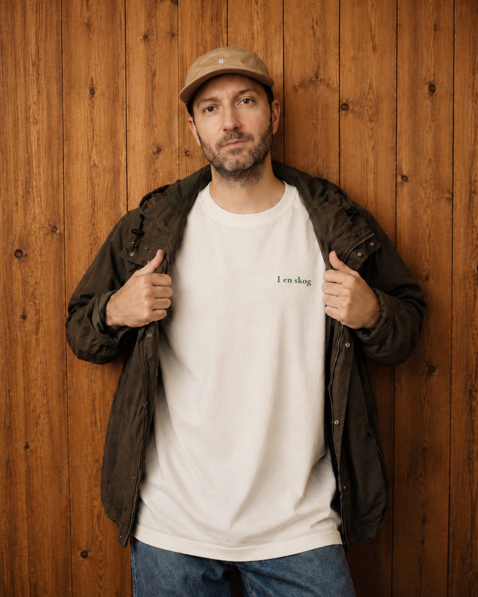
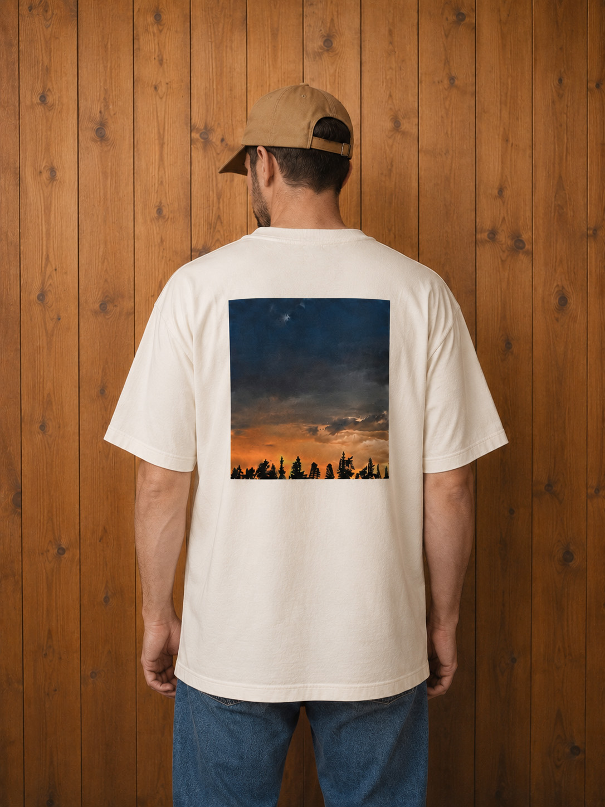
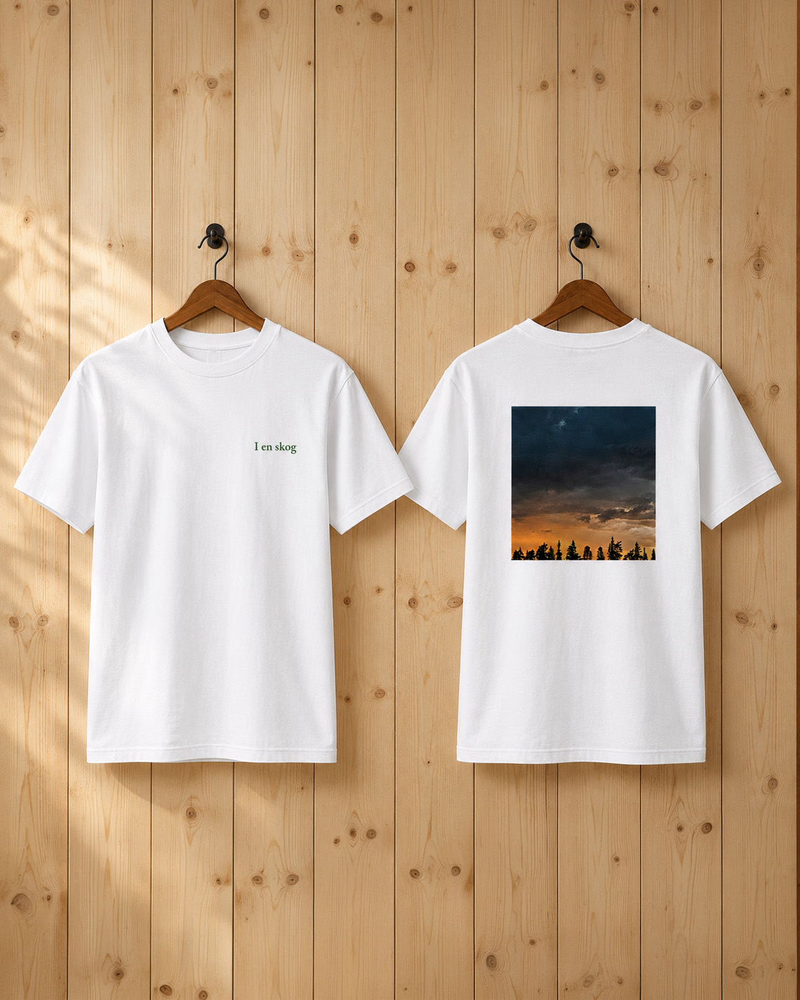
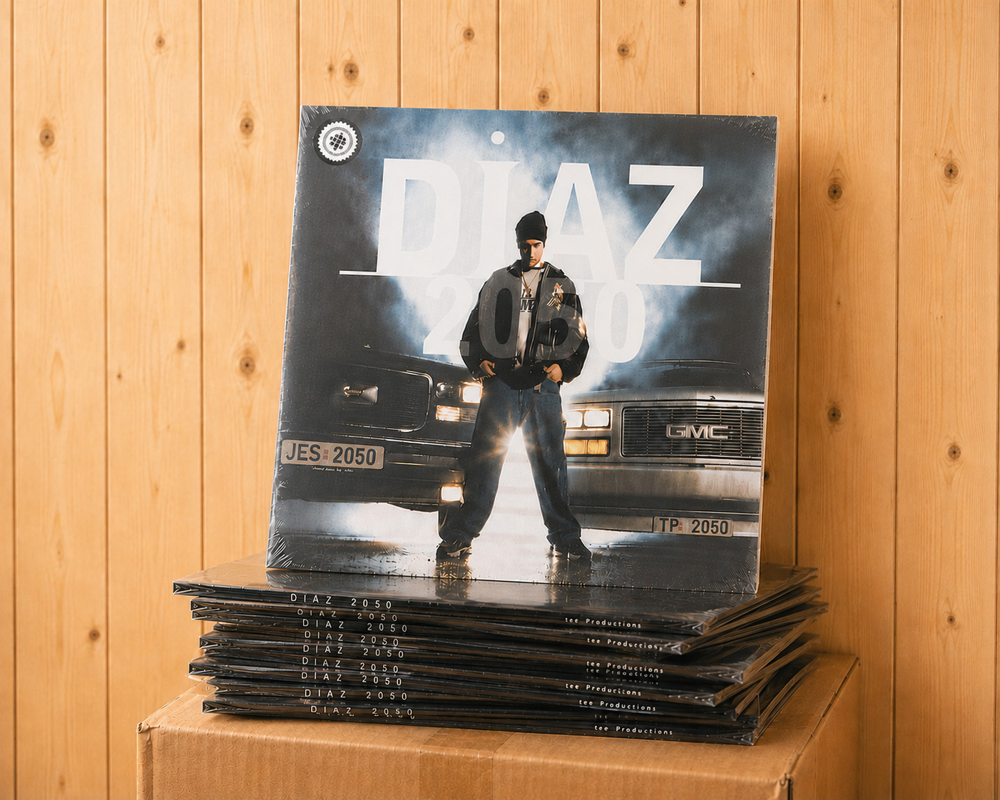
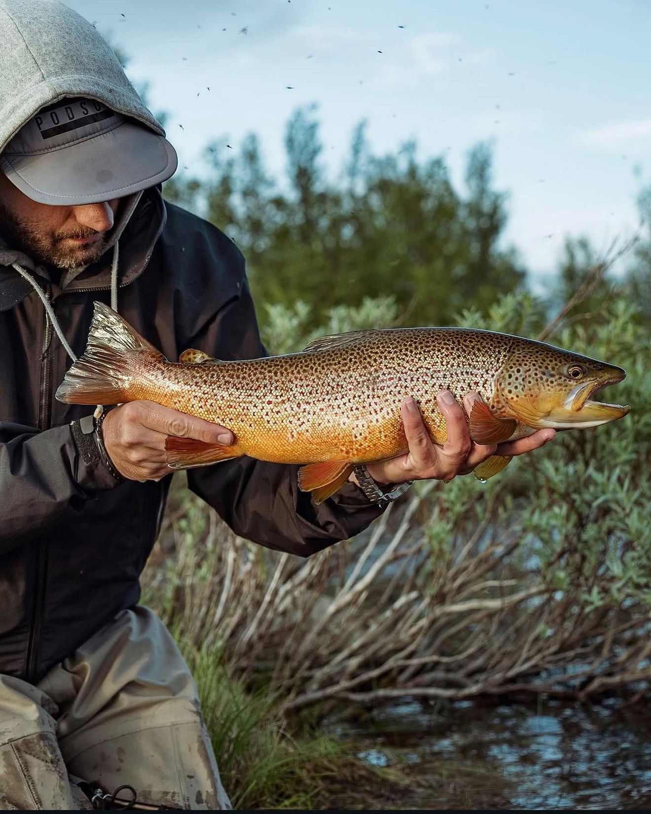

Diaz – Norsk rapper fra Jessheim | Offisiell artistside
Diaz ute med ny musikk – album Svarttjern og singelen I en skog


Andres Rafael Diaz-Nyhus, kjent under artistnavnet Diaz, er en norsk musiker og fluefisker fra Jessheim, like nord for Oslo. Etternavnet hans reflekterer spansk arv gjennom faren, mens moren er norsk med dype røtter på Jessheim.
Diaz ble en del av Oslos tidlige hiphop-miljø allerede på slutten av 1980-tallet, først som DJ. På begynnelsen av 1990-tallet hadde han en rekke roller som bidro til å forme miljøet: Han åpnet en hiphop-platebutikk, ga ut mixtapes, jobbet i plateselskap, var programleder på radio og arrangerte konserter – ofte sammen med produsent Tommy Tee, som skulle bli en viktig mentor. Da Tommy Tee i midten av 90-årene fokuserte mer på produksjon, gikk Diaz over til rapping. Han bidro på utgivelser med blant andre Helen Eriksen, Warlocks og N-Light-N (Son of Light), og dukket opp på sentrale skandinaviske hiphop-låter som «Takin’ Ova» og «Crossing Borders», sistnevnte i samarbeid med den svenske rapperen Petter.
Det engelskspråklige debutalbumet 2050 (2000) fikk oppmerksomhet både i USA og Europa, med gode anmeldelser fra blant annet Billboard Magazine og The Source. Noen år senere nådde Diaz et viktig internasjonalt høydepunkt gjennom samarbeidet med RZA fra Wu-Tang Clan på albumet The World According to RZA. I etterkant turnerte Diaz også med RZA, noe som åpnet døren for ytterligere samarbeid i årene som fulgte.
I 2003 ga han ut det norskspråklige albumet Velkommen hjem, Andres, som ble hans største kommersielle suksess. Albumet inneholdt flere spennende samarbeid, blant annet med Shagrath fra Dimmu Borgir, og bød på låter som «Hvem er denne karen?» og «Jessheim». Sistnevnte låt har siden blitt et kulturelt referansepunkt i Norge, og ble i 2012 samplet av Karpe i «Toyota’n til Magdi». I tillegg har «Jessheim» blitt benyttet en rekke ganger i andre sammenhenger, som i filmen Norske byggeklosser (2018), der handlingen var lagt til hjembyen.
I 2026 ble det offentlig kjent at Diaz vender tilbake med ny musikk. EP-en Svarttjern markerer et nytt kapittel, der han bygger videre på det stemningsfulle og naturnære uttrykket som har preget hans senere arbeid. Første singel, «I en skog», viderefører utforskningen av stillhet, landskap og menneskets forhold til naturen, sett gjennom blikket til en av norsk hiphops mest særegne stemmer.
I juni 2026 skal Diaz spille sammen med Tommy Tee og andre musikkollegaer i Operaen. Forestillingen handler om historien til plateselskapet Tee Productions, som Diaz har vært en del av siden den spede starten.


Bildene som er tilgjengelige for nedlasting på denne siden, kan brukes fritt. Fotograf Kristoffer Kumar skal krediteres sammen med Linjebo Musikk ved publisering. Eventuell kommersiell bruk må avtales på forhånd.
Eksklusiv I en skog t-skjorte!
Begrenset opplag av t-skjorte i fargene hvit og natural raw (ubehandlet bomull). Kommer i str: Small, Medium, Large og XL. Pris 400,-.
Send en e-post med din bestilling til linjebomusikk@gmail.com



Debutalbumet 2050 på vinyl!
Vi sitter på en bunke av Diaz sitt første album fra 2000 som ble gitt ut under Norske albumklassikere i 2023. Albumet høstet gode kritikker både i Norge og utenlands, blant annet i blader som The Source, Billboard og Hip-Hop Connection. Det amerikanske musikkmagasinet Billboard omtalte sågar Diaz som en ny komet fra Europa. Albumet ble produsert av Tommy Tee, og utgitt på hans label Tee Productions. Her finner du gjester som Channel Live, Mista Sinista (X-Ecutioners), Thomas Rusiak mfl.
Pris 350,-. Send en e-post med din bestilling til linjebomusikk@gmail.com

Alle henvendelser som gjelder booking kan rettes til Linjebo Musikk på mail: linjebomusikk@gmail.com

Foredragene kan skreddersys etter ønsker og behov. Alle henvendelser som gjelder foredrag om fluefiske kan rettes til Linjebo Musikk på e-post: linjebomusikk@gmail.com
Alle henvendelser som gjelder promotering og radio kan rettes til Marion S. Bjørsvik (Sony Music Norway) på mail: marion.skogseth@sonymusic.com